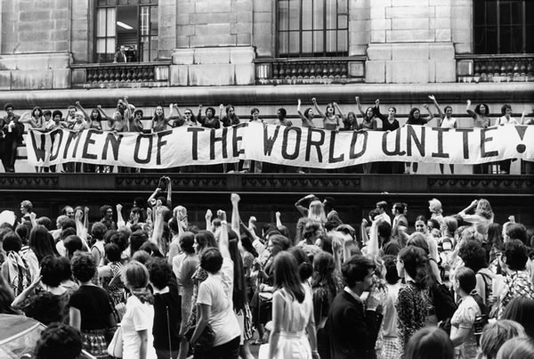
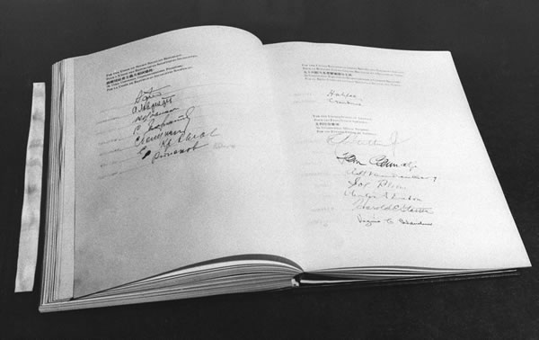
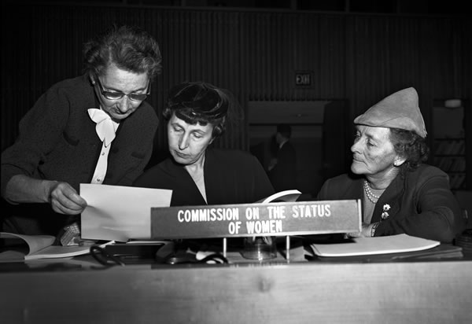
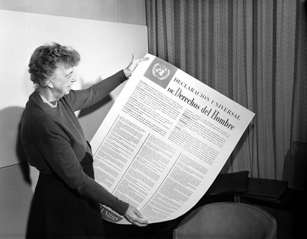
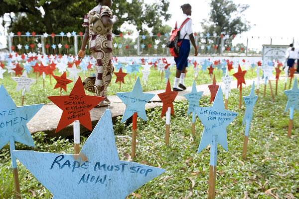

International Women's Day is celebrated in many countries around the
world. It is a day when women are recognized for their achievements
without regard to divisions, whether national, ethnic, linguistic,
cultural, economic or political. Since those early years, International
Women's Day has assumed a new global dimension for women in developed
and developing countries alike. The growing international women's
movement, which has been strengthened by four global United Nations
women's conferences, has helped make the commemoration a rallying point
to build support for women's rights and participation in the political
and economic arenas. We invite you to learn about the history of women’s
rights and the UN's contribution to the cause.

The UN at 70: Gender Equality Milestones & Memorable Moments
From groundbreaking resolutions to awe-inspiring speeches to activists
inspiring change offline and online, this timeline marks select
milestones and memorable moments for women's rights at the United
Nations since its founding in 1945.

October 24, 1945
UN Charter: "Fundamental freedoms for all"
Established on 24 October 1945 to promote international co-operation
following the devastation of World War II, the UN has since its
inception enshrined the equal rights of men and women at the heart of
its raison d'être. Its founding charter outlines that among its purpose
is to promote and encourage "fundamental freedoms for all without
distinction as to race, sex, language, or religion." Less than a year
later during the inaugural session of the UN General Assembly in London,
U.K., Frieda Dalen of Norway becomes the first woman delegate to address
it and Eleanor Roosevelt of U.S.A. famously reads an "open letter to the
women of the world" urging for their increased involvement in national
and international affairs.

June 21, 1946
Tracking progress: Commission on the Status of Women
A functional commission of the United Nations Economic and Social
Council (ECOSOC), the Commission on the Status of Women (CSW) is
established as the first global intergovernmental body exclusively
dedicated to the promotion of gender equality and the empowerment of
women. Instrumental in monitoring the status of women's rights worldwide
and shaping global standards on gender equality, the Commission brings
together Member States, civil society organizations and UN entities to
assess gaps and evaluate progress on an annual basis. In the Commission,
Member States agree on actions to accelerate the achievement of women's
rights and empowerment.

December 10, 1948
One giant leap for humanity: The Universal Declaration of Human Rights
Adopted by the UN General Assembly in 1948, the landmark Universal
Declaration of Human Rights is the first global recognition that there
are basic inalienable rights and fundamental freedoms that apply to
every human being. Drafted as "a common standard of achievement for all
peoples and nations," the Declaration for the first time in human
history spells out basic civil, political, economic, social and cultural
rights that all human beings — men and women alike — should enjoy. The
cornerstone for modern human rights, the Declaration together with the
International Covenant on Civil and Political Rights (1966) and the
International Covenant on Economic, Social and Cultural Rights (1966)
forms the International Bill of Human Rights.
March 8, 1975 — December 31, 1985
A time to celebrate: International Women’s Day, Year & Decade
In 1975, during International Women's Year, the UN begins commemorating
International Women's Day (8 March). Two years later, the UN General
Assembly officially formalizes the Day — although the first observance
dates back to 28 February 1909, when the Socialist Party of America
designated the day to honour a garment workers' strike the year prior in
New York. Coinciding with International Women's Year, the first World
Conference on Women takes place in Mexico, 19 June-2 July 1975. It is
here where a 10-year World Plan of Action for the Advancement of Women
is formed, following which the UN General Assembly proclaims 1976-1985
the United Nations Decade for Women: Equality, Development and Peace to
implement the action plan.
December 18, 1979
The golden standard: Women's Bill of Rights
In 1975, during International Women's Year, the UN begins commemorating
International Women's Day (8 March). Two years later, the UN General
Assembly officially formalizes the Day — although the first observance
dates back to 28 February 1909, when the Socialist Party of America
designated the day to honour a garment workers' strike the year prior in
New York. Coinciding with International Women's Year, the first World
Conference on Women takes place in Mexico, 19 June-2 July 1975. It is
here where a 10-year World Plan of Action for the Advancement of Women
is formed, following which the UN General Assembly proclaims 1976-1985
the United Nations Decade for Women: Equality, Development and Peace to
implement the action plan.
<
>
December 20, 1993
Enough is enough: End violence against women
The World Conference on Human Rights in Vienna, June 1993, takes historic steps to protect women's rights by recognizing violence against women as a human rights violation and calls for measures towards eliminating such forms of violence. Subsequently, in December that year, the UN General Assembly adopts the Declaration on the Elimination of Violence against Women, making it the first international instrument to explicitly address and define forms of violence against women and laying out a framework for action globally. In 1994, the UN Commission on Human Rights appoints Radhika Coomaraswamy of Sri Lanka as the first Special Rapporteur on Violence against Women to record acts of gender-based violence and to make recommendations to eliminate them. Still, one in three women and girls will experience violence in their lifetimes, making it one of the most pervasive human rights violations and continues to be a priority for the UN to address.